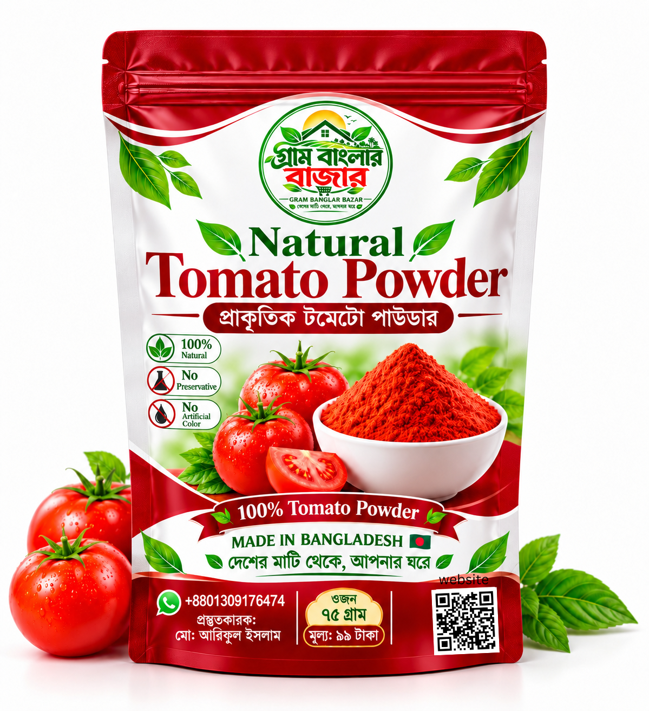

প্রাকৃতিক টমেটো পাউডার
NATURAL TOMATO POWDER
টমেটোর পরিচিত স্বাদ রান্নায় যোগ করার সহজ ও সুবিধাজনক উপায়। বাছাই করা টমেটো থেকে তৈরি এই পাউডার স্যুপ, সস, তরকারি, বিরিয়ানি, পাস্তা ও নুডলসে ব্যবহার করতে পারেন।

NATURAL TOMATO POWDERপণ্যের আসল সামনের প্যাকেটের ছবি
📸 পণ্যের ছবির গ্যালারি
সামনের প্যাকেট, পেছনের প্যাকেট ও পণ্যের বিস্তারিত ছবি দেখুন

ছবির ওপর চাপ দিলে বড় করে দেখা যাবে।
🍅 পণ্য পরিচিতি
প্রাকৃতিক টমেটো পাউডার হলো টমেটো শুকিয়ে গুঁড়ো করা একটি রান্নার উপকরণ। তাজা টমেটো ব্যবহার না করেও প্রয়োজনমতো টমেটোর স্বাদ রান্নায় যোগ করতে এটি কাজে লাগে। অল্প জায়গায় সংরক্ষণ করা যায় এবং রান্নার সময় সরাসরি মিশিয়ে নেওয়া যায়।
গ্রাম বাংলার বাজারের এই পণ্যের নির্ধারিত উপাদান: ১০০% টমেটো।
✨ পণ্যের বৈশিষ্ট্য
১০০% টমেটো
পণ্যের উপাদান হিসেবে টমেটো পাউডারই নির্ধারিত। কোনো অতিরিক্ত উপাদান মেশানো হয় না।
রান্নায় বহুমুখী ব্যবহার
স্যুপ, সস, তরকারি, নুডলস ও ঘরোয়া রান্নায় টমেটোর স্বাদ যোগ করতে ব্যবহার করা যায়।
পরিমিতভাবে ব্যবহারযোগ্য
রান্নার পরিমাণ ও নিজের স্বাদ অনুযায়ী অল্প দিয়ে শুরু করে প্রয়োজনমতো বাড়ানো যায়।
সুবিধাজনক প্যাক
৭৫ গ্রামের প্যাকেট। ব্যবহারের পর মুখ ভালোভাবে বন্ধ করে রাখুন।
♨️ তৈরির প্রক্রিয়া
টমেটো পাউডার তৈরির সাধারণ ধাপগুলো নিচে দেওয়া হলো। আপনার উৎপাদন ব্যবস্থার সঙ্গে মিলিয়ে প্রকাশের আগে ধাপগুলো নিশ্চিত করে নেবেন।
🍲 কীভাবে ব্যবহার করবেন
রান্নায় ব্যবহার করার সহজ নিয়ম
রান্নার প্রয়োজন অনুযায়ী অল্প পরিমাণ টমেটো পাউডার সরাসরি স্যুপ, সস, তরকারি বা নুডলসে মিশিয়ে নিন। ভালোভাবে নেড়ে মিশিয়ে স্বাদ দেখে প্রয়োজন হলে আরও যোগ করুন। নির্দিষ্ট মাপের বদলে রান্নার পরিমাণ ও পছন্দ অনুযায়ী ব্যবহার করুন।
🥣 স্যুপ ও সস
স্যুপ বা সস তৈরি করার সময় অল্প করে মিশিয়ে টমেটোর স্বাদ আনতে পারেন।
🍜 তরকারি ও নুডলস
রান্নার সময় মসলার সঙ্গে বা ঝোলের মধ্যে মিশিয়ে ব্যবহার করতে পারেন।
📦 সংরক্ষণ ও ব্যবহারে সতর্কতা
সঠিকভাবে সংরক্ষণ
- শুকনো ও ঠান্ডা স্থানে রাখুন।
- সরাসরি রোদ ও আর্দ্রতা থেকে দূরে রাখুন।
- ব্যবহারের পর প্যাকেটের মুখ ভালোভাবে বন্ধ করুন।
- ভেজা চামচ ব্যবহার করবেন না।
ব্যবহারের আগে
- প্যাকেটের গায়ে দেওয়া উৎপাদন ও মেয়াদোত্তীর্ণের তারিখ দেখুন।
- প্যাকেট ক্ষতিগ্রস্ত হলে ব্যবহার করবেন না।
- অস্বাভাবিক গন্ধ, রং বা আর্দ্রতা দেখা গেলে ব্যবহার বন্ধ রাখুন।
📋 পণ্যের বিস্তারিত তথ্য
| পণ্যের নাম | প্রাকৃতিক টমেটো পাউডার |
| ইংরেজি নাম | Natural Tomato Powder |
| উপাদান | ১০০% টমেটো |
| নিট ওজন | ৭৫ গ্রাম |
| খুচরা মূল্য | ৯৯ টাকা |
| উৎপাদন ও বাজারজাতকারী | মো: আরিফুল ইসলাম |
| ঠিকানা | পুঠিয়া, রাজশাহী, বাংলাদেশ |
| উৎপত্তি | MADE IN BANGLADESH 🇧🇩 |
| উৎপাদন ও মেয়াদ | প্যাকেটের গায়ে উল্লেখিত তারিখ দেখুন |
❓ ক্রেতাদের সাধারণ প্রশ্ন
উপাদান হিসেবে ১০০% টমেটো পাউডার নির্ধারিত।
স্যুপ, সস, তরকারি, বিরিয়ানি, পাস্তা, নুডলসসহ বিভিন্ন রান্নায় প্রয়োজনমতো ব্যবহার করতে পারেন।
রান্নার পরিমাণ ও নিজের স্বাদ অনুযায়ী অল্প দিয়ে শুরু করুন, পরে প্রয়োজনমতো বাড়ান।
প্যাকেটের মুখ ভালোভাবে বন্ধ করে শুকনো ও ঠান্ডা স্থানে রাখুন। ভেজা চামচ ব্যবহার করবেন না।
প্যাকেটের গায়ে মুদ্রিত উৎপাদন ও মেয়াদোত্তীর্ণের তারিখ অনুসরণ করুন।
দেশের মাটি থেকে, আপনার ঘরে
গ্রাম বাংলার বাজার
উৎপাদন ও বাজারজাতকারী
মো: আরিফুল ইসলাম
পুঠিয়া, রাজশাহী, বাংলাদেশ
WhatsApp: +8801309176474